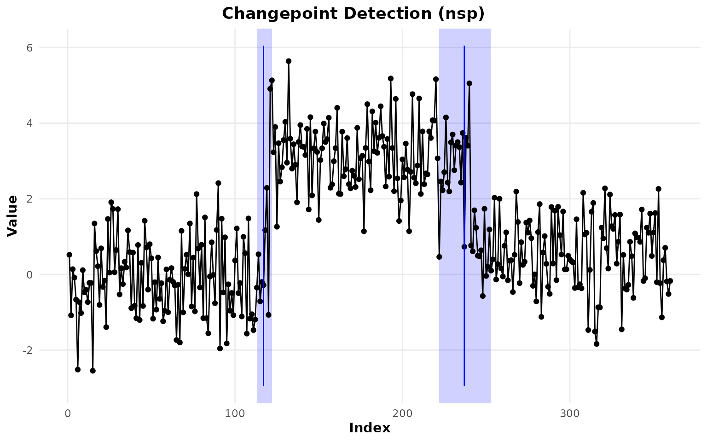
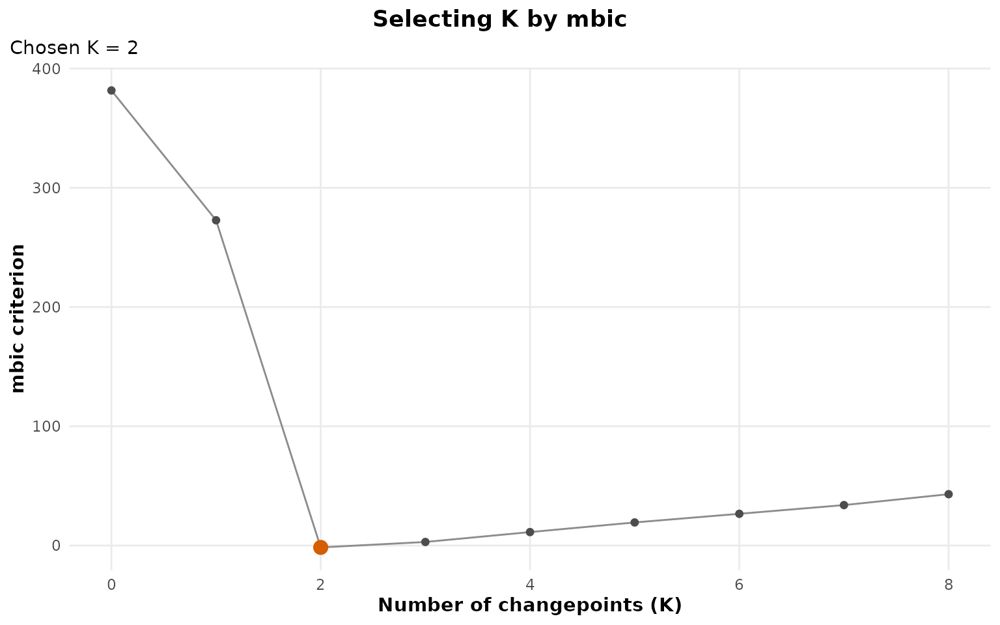
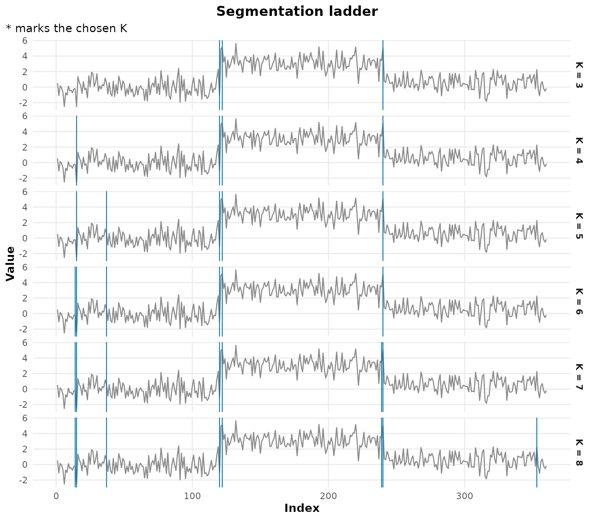
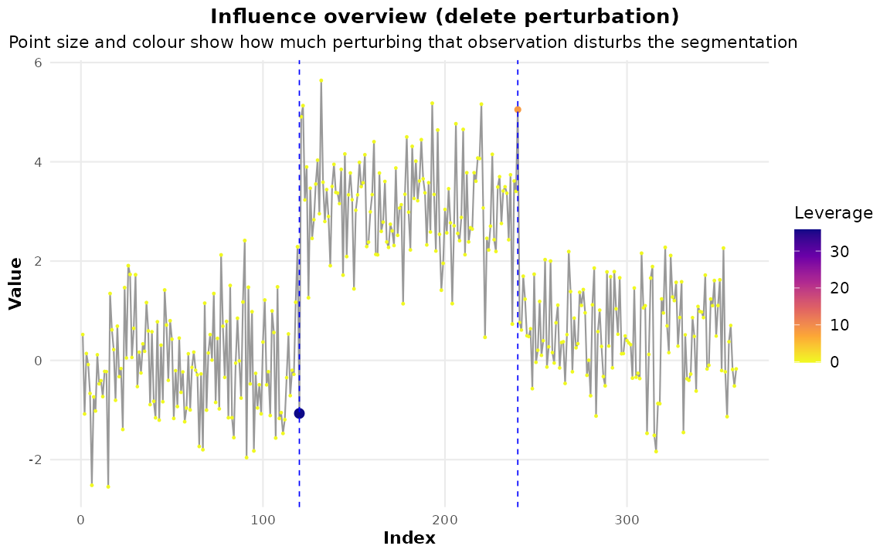
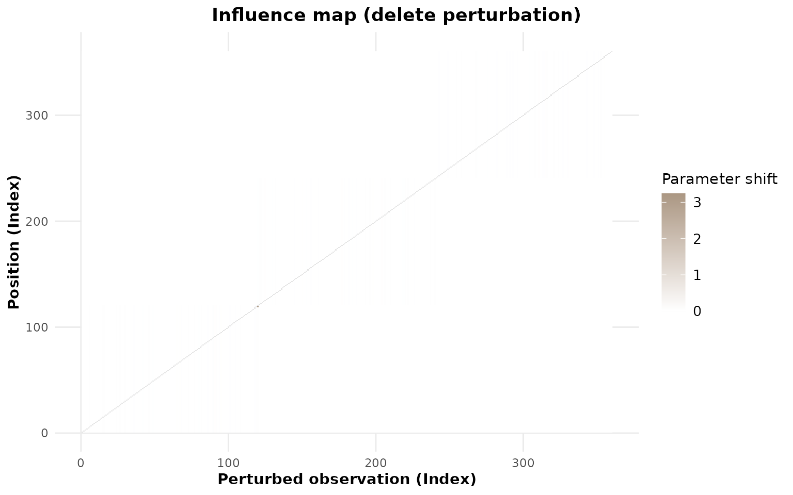
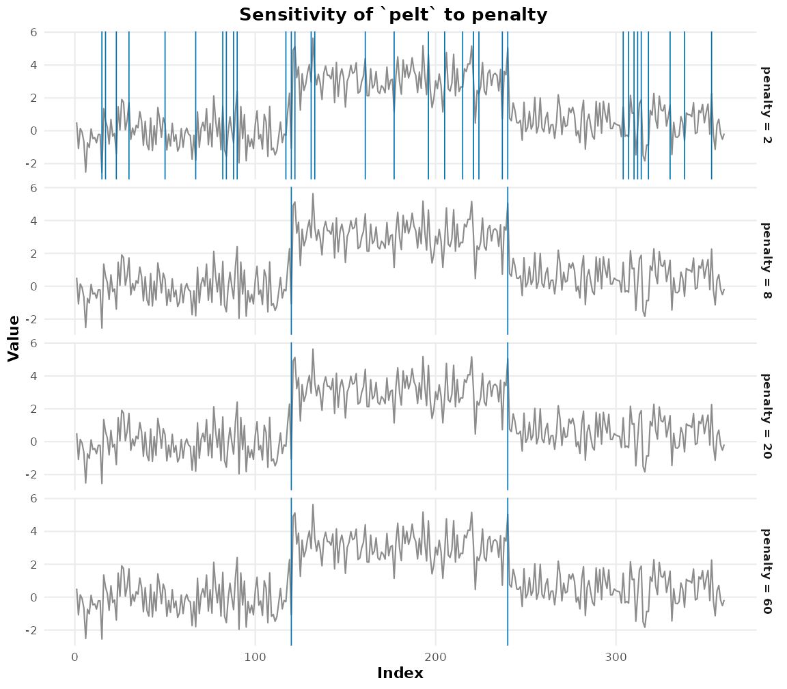
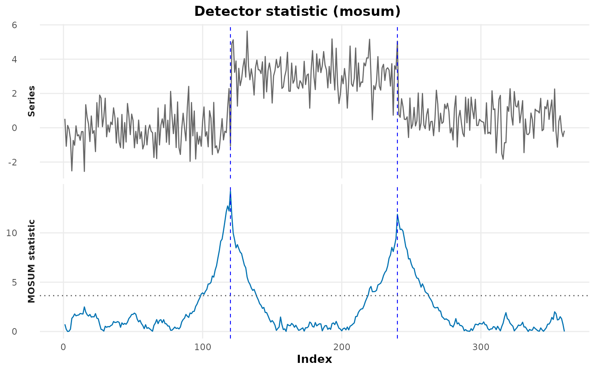
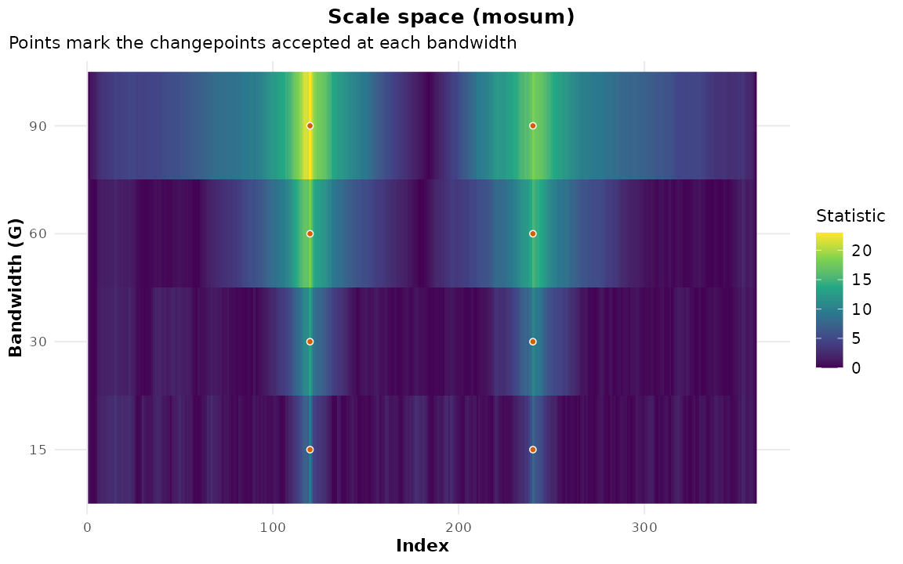
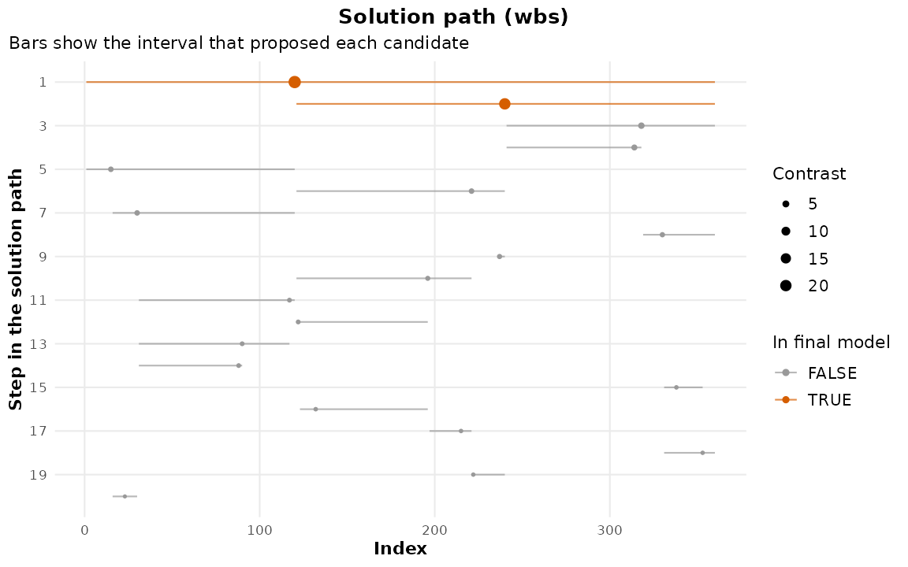

Inference, Selection and Diagnostics
Youzhi
Yu
University of Chicago
Source: vignettes/inference.Rmd
inference.RmdDetection gives you locations. This vignette is about the four questions that come next, and that a bare list of locations cannot answer:
-
How sure are we about where? —
cpt_confint(),nsp_wrapper(). -
Is the change real at all? —
cpt_test(), and why the answer is harder than it looks. -
How many changes are there? —
cpt_select(). -
What is driving this answer? —
cpt_influence(),cpt_sensitivity(),cpt_statistic().
set.seed(2026)
x <- c(rnorm(120), rnorm(120, 3), rnorm(120, 0.5))
fit <- cpt_detect(x, method = "pelt")
fit
#> ggcpt (changepoint detection result)
#> Method: pelt
#> Change in: mean
#> Changepoints found: 2
#> CP convention: left
#> Penalty: MBIC
#> Series length: 360
#>
#> Changepoints:
#> # A tibble: 2 × 2
#> cp cp_value
#> <int> <dbl>
#> 1 120 -1.07
#> 2 240 5.051. Where could the changepoint be?
Four provenances, one contract
Only a handful of engines ship an interval of their own.
cpt_confint() covers the rest, and — because the four
routes mean genuinely different things — reports which one it used in a
source column rather than presenting them as
interchangeable.
cpt_confint(fit, method = "bootstrap", B = 100, seed = 1)
#> # A tibble: 2 × 6
#> cp ci_lower ci_upper level source n_replicates
#> <int> <int> <int> <dbl> <chr> <int>
#> 1 120 119 120 0.95 bootstrap 100
#> 2 240 238 241 0.95 bootstrap 100The bootstrap route resamples residuals within the fitted segments, re-runs the detector, and takes quantiles of the re-detected location. It measures the sampling variability of the procedure conditional on the fitted segmentation. It is model-agnostic and available for every engine; it is not exact.
When the engine has its own interval, method = "auto"
uses it:
sm <- smuce_wrapper(x)
cpt_confint(sm)
#> # A tibble: 2 × 5
#> cp ci_lower ci_upper level source
#> <int> <int> <int> <dbl> <chr>
#> 1 120 117 120 NA native
#> 2 240 239 244 NA nativeThose are SMUCE’s simultaneous confidence sets — a different
object from a bootstrap frequency band, which is exactly why the
source column exists.
A changepoint that is an interval
Narrowest Significance Pursuit (Fryzlewicz 2024) inverts the usual framing. Rather than estimating locations and then asking whether they are real, it returns a set of intervals, each of which contains at least one changepoint, with the guarantee holding globally across all the intervals at level . The coverage is exact and finite-sample.
res_nsp <- nsp_wrapper(x, alpha = 0.1, M = 200, seed = 1)
cpt_regions(res_nsp)
#> # A tibble: 2 × 4
#> start end length value
#> <int> <int> <int> <dbl>
#> 1 113 122 10 4.31
#> 2 222 253 32 4.47
autoplot(res_nsp)
Read the widths. A narrow band is a sharply located change; a wide
one is the honest statement that the data pin the change down only
loosely. Note what the result does not claim: NSP
produces no point estimate, so the cp column holds the
interval midpoint, is labelled region_midpoint in
cp_source, and says so when the object prints. The region
is the inferential object.
The self-normalised and autoregressive variants keep the guarantee under heavy tails, heteroscedasticity and serial dependence:
y_ar <- as.numeric(stats::arima.sim(list(ar = 0.6), 300)) +
rep(c(0, 3), each = 150)
cpt_regions(nsp_wrapper(y_ar, variant = "ar", ord = 1, M = 200, seed = 1))
#> # A tibble: 0 × 3
#> # ℹ 3 variables: start <int>, end <int>, length <int>2. Is the change real?
This is where changepoint analysis is most often done wrong. Testing a change at a location that was chosen because the data looked like it changed there is circular, and the resulting p-values are anti-conservative, often severely.
cpt_test() never hides that. It uses the engine’s own
test where one exists and an explicitly unadjusted two-sample test where
none does — and the selection_adjusted column records
whether the p-value accounts for selection, which is not the
same question. segmented’s Davies test is built for it and
reads TRUE; strucchange’s route is the Chow F
evaluated at an estimated break date, which is conventional to report
and still assumes the date was fixed in advance, so it reads
FALSE alongside the generic fallback:
suppressWarnings(cpt_test(fit))
#> # A tibble: 2 × 6
#> cp estimate statistic p_value method selection_adjusted
#> <int> <dbl> <dbl> <dbl> <chr> <lgl>
#> 1 120 3.25 25.6 4.24e-70 Welch two-sample t (unad… FALSE
#> 2 240 -2.60 -21.7 2.38e-58 Welch two-sample t (unad… FALSE
suppressWarnings(cpt_test(strucchange_wrapper(x)))
#> # A tibble: 2 × 6
#> cp estimate statistic p_value method selection_adjusted
#> <int> <dbl> <dbl> <dbl> <chr> <lgl>
#> 1 120 1.95 149. 0 Chow F at estimated b… FALSE
#> 2 240 -0.976 28.3 0.000000182 Chow F at estimated b… FALSEIf you need a guarantee that survives selection, the route is NSP
(above) or cpt_confint(method = "nsp"), which maps each
detected changepoint to the narrowest region covering it and returns
NA for one that no region covers — because “no region
supports this at level
”
is a finding, not a missing value.
cpt_confint(fit, method = "nsp", level = 0.9, seed = 1)
#> # A tibble: 2 × 5
#> cp ci_lower ci_upper level source
#> <int> <int> <int> <dbl> <chr>
#> 1 120 113 122 0.9 nsp_region
#> 2 240 222 253 0.9 nsp_region3. How many changepoints?
cpt_crops() draws the penalty path.
cpt_select() chooses from it, over one candidate ladder
shared by every criterion — so “BIC says 2, cross-validation says 3” is
a comparison of criteria and not of two different searches.
sel <- cpt_select(x, criterion = "mbic", k_max = 8)
sel
#> ggcpt_selection (criterion: mbic, method: pelt)
#> Candidates scored: K = 0 to 8
#> Chosen K: 2
#> Locations: 120, 240
#>
#> # A tibble: 9 × 4
#> k value cost chosen
#> <int> <dbl> <dbl> <lgl>
#> 1 0 382. 382. FALSE
#> 2 1 273. 257. FALSE
#> 3 2 -1.55 -33.6 TRUE
#> 4 3 3.01 -41.5 FALSE
#> 5 4 11.3 -47.5 FALSE
#> 6 5 19.4 -54.1 FALSE
#> 7 6 26.6 -58.5 FALSE
#> 8 7 33.9 -63.0 FALSE
#> 9 8 43.1 -67.5 FALSEcriterion = "mbic" is the segment-length modified BIC of
Zhang and Siegmund (2007) — the real one,
which reads the segment lengths and so cannot be expressed by
cpt_penalty()’s function of
and
alone.
autoplot(sel)
The ladder plot is more informative than the criterion curve, because it shows what each candidate actually is:
autoplot(sel, plot_type = "ladder", max_facets = 6)
Cross-validation is the criterion with a consistency proof (Zou et al. 2020):
cpt_select(x, criterion = "cv", k_max = 8)$k
#> [1] 2A note on AIC: its penalty does not grow with , so it over-selects and will usually take every rung the ladder offers. It is available because people ask for it and because seeing the curve is instructive, not because it is a good default.
4. What is driving the answer?
Which observation
cpt_stability() answers “would I find this again?”.
cpt_influence() asks the sharper question — which single
observation, if perturbed, changes the segmentation — following Wilms et al. (2022).
inf <- cpt_influence(fit, engine = if (has_infl) "auto" else "recompute",
subset = if (has_infl) NULL else seq(1, 360, by = 6))
inf
#> ggcpt_influence (delete perturbation, method: pelt, engine: changepoint.influence)
#> Observations perturbed: 360
#> Unperturbed changepoints: 2
#> Perturbations changing the number of changepoints: 0 (0%)
#>
#> Most influential observations:
#> # A tibble: 5 × 5
#> index delta_n_cp max_shift param_shift leverage
#> <int> <int> <dbl> <dbl> <dbl>
#> 1 120 0 2 3.25 35.8
#> 2 240 0 1 0.0160 8.43
#> 3 222 0 0 0.0226 -0.0292
#> 4 90 0 0 0.0212 -0.0374
#> 5 132 0 0 0.0209 -0.0388
autoplot(inf)
autoplot(inf, plot_type = "map")
cpt_leverage() ranks the observations:
head(cpt_leverage(inf), 5)
#> # A tibble: 5 × 5
#> index delta_n_cp max_shift param_shift leverage
#> <int> <int> <dbl> <dbl> <dbl>
#> 1 120 0 2 3.25 35.8
#> 2 240 0 1 0.0160 8.43
#> 3 222 0 0 0.0226 -0.0292
#> 4 90 0 0 0.0212 -0.0374
#> 5 132 0 0 0.0209 -0.0388Which setting
sens <- cpt_sensitivity(x, method = "pelt",
over = list(penalty = c(2, 8, 20, 60)))
sens
#> ggcpt_sensitivity (method: pelt, 4 settings)
#> Swept: penalty
#> Changepoints found: 2 to 46
#>
#> # A tibble: 4 × 2
#> penalty n_cp
#> <dbl> <int>
#> 1 2 46
#> 2 8 2
#> 3 20 2
#> 4 60 2
autoplot(sens)
This is the direct answer to the commonest reviewer question about a changepoint analysis, and it is worth running before the analysis is written up rather than after it is questioned.
What the detector computed
Every detector evaluates something at every location and then keeps only the argmax. Three accessors give the discarded object back.
res_mosum <- cpt_detect(x, method = "mosum")
autoplot(res_mosum, type = "statistic")
autoplot(type = "statistic") is a thin wrapper:
ggcpt_statistic() is the plotting function itself, and
cpt_statistic() returns the numbers behind it.
ggcpt_statistic(res_mosum)
The scale-space view answers a question a single-bandwidth fit cannot: at which resolutions does this feature exist? A change visible only at a wide bandwidth is a slow shift; one visible only at a narrow bandwidth is a spike.
ggcpt_scale_space(res_mosum, bandwidths = c(15, 30, 60, 90))
cpt_scale_space() returns the sweep as data, one row per
(location, bandwidth) pair, so the picture can be counted rather than
eyeballed. How many locations cross the threshold at each bandwidth:
ss <- cpt_scale_space(x, bandwidths = c(15, 30, 60, 90))
aggregate(significant ~ bandwidth, data = ss, FUN = sum)
#> bandwidth significant
#> 1 15 20
#> 2 30 61
#> 3 60 171
#> 4 90 302A wide bandwidth flags a broad neighbourhood of each change and a narrow one flags a few points, which is the resolution trade-off made numeric.
And the solution path shows the order in which candidates entered the model, and how decisively each beat the next:
ggcpt_solution_path(cpt_detect(x, method = "wbs"), max_steps = 20)
cpt_solution_path() is the same object as a tibble. The
contrast column is the margin by which each candidate beat
the next, and selected marks the ones the penalty kept — so
the gap between the last selected row and the first rejected one is how
close the decision was:
head(cpt_solution_path(cpt_detect(x, method = "wbs")), 5)
#> # A tibble: 5 × 6
#> step cp contrast start end selected
#> <int> <int> <dbl> <int> <int> <lgl>
#> 1 1 120 24.9 1 360 TRUE
#> 2 2 240 20.2 121 360 TRUE
#> 3 3 318 4.26 241 360 FALSE
#> 4 4 314 3.65 241 318 FALSE
#> 5 5 23 3.18 1 120 FALSEAn engine that exposes none of these says so, and names the ones that do:
cpt_statistic(fit)
#> Error:
#> ! Engine `pelt` does not expose a per-location statistic. These do: amoc, wbs, not, mosum, bcp, beast, nsp, pettitt, buishand, snht.Putting it together
cat(head(cpt_report(fit, session = FALSE), 20), sep = "\n")#> # Changepoint analysis report
#>
#> - Method: `pelt`
#> - Change in: mean
#> - Penalty: MBIC
#> - Series length: 360
#> - Changepoints found: 2
#> - Detection runtime: 0.022 s
#>
#> ## Changepoints
#>
#> ```
#> # A tibble: 2 × 2
#> cp cp_value
#> <int> <dbl>
#> 1 120 -1.07
#> 2 240 5.05
#> ```
#>
#> ## Segments